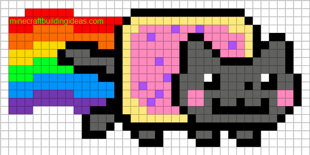

<ion-header [translucent]="true">
  <ion-toolbar>
    <ion-title>
      My Pancakes - Home Page
      
    </ion-title>

  </ion-toolbar>
</ion-header>

<ion-content [fullscreen]="true">

  <ion-grid>
    <ion-row>
      <ion-col size="6" *ngFor="let aCrepe of mesCrepes">
        <a [routerLink]="['/pancake-fiche/detail', aCrepe.id]">
          <h3>{{aCrepe.name}}</h3>
          <!--  -->
          <!-- 2e manière de faire appel à une image et + responsive? -->
          <ion-img [src]="aCrepe.photo.webViewPath"></ion-img>
          Voir le détail
        </a>
        <!-- <p>{{aCrepe.description}}</p> -->
      </ion-col>
    </ion-row>
  </ion-grid>

  <!-- POUR ALLER VERS LA PAGE DE CREATION -->
  <!-- vertical et horizontal pour préciser la position -->
  <!-- fixed pour que ça ne soit fix même si on doit scroller la page car bcp de crêpes -->
  <ion-fab vertical="bottom" horizontal="center" slot="fixed">
    <ion-fab-button (click)="createNew()">
      <ion-icon name="add"></ion-icon>
    </ion-fab-button>
  </ion-fab>

  <!-- Pour IPHONE ??? -->
  <!-- <ion-header collapse="condense">
    <ion-toolbar>
      <ion-title size="large">Blank</ion-title>
    </ion-toolbar>
  </ion-header> -->

  <!-- <div id="container">
    <strong>Ready to create an app?</strong>
    <p>Start with Ionic <a target="_blank" rel="noopener noreferrer" href="https://ionicframework.com/docs/components">UI Components</a></p>
  </div> -->

</ion-content>
